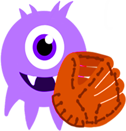

<!DOCTYPE html>
<html>
<head>
<title>캐치몬 - 이슈 해결 도우미</title>
<meta charset="utf-8">
<meta http-equiv="X-UA-Compatible" content="IE=edge" />
<meta name="viewport" content="width=device-width,initial-scale=1.0,minimum-scale=1.0,maximum-scale=1.0">
<meta name="keywords" content="IT,개발,외주,전문,웹,반응형" />
<meta name="description" content="외주 개발 전문 팀 katchmon을 소개드립니다." />
<meta property="og:title" content="제목" />
<meta property="og:keywords" content="키워드"/>
<meta property="og:image" content="이미지주소" />
<meta property="og:description" content="설명" />
<link rel="icon" type="image/png" href="image/favicon_192x192.png">
<link rel="apple-touch-icon-precomposed" href="image/favicon_96x96.png" />
<script type="text/javascript" src="js/lib/vue-2.5.16.min.js"></script>
<script type="text/javascript" src="js/lib/babel.min.js"></script>
<script type="text/javascript" src="js/lib/es6-promise.min.js"></script>
<link rel="stylesheet" type="text/css" href="css/common.css">
<link rel="stylesheet" type="text/css" href="css/main.css">
</head>
<body>
	<div id="katchmon-content-container"></div>
	<script type="text/babel">
	new Vue({
		el: '#katchmon-content-container',
		data: {
			contact: {
				title: null,
				isShowSymbol: false
			},
			introduce: {
				title: null,
				isShowSymbol: false
			}
		},
		methods: {
			handleScroll(event) {
				this.checkAllIsInViewPort();
			},
			isInViewPort(element) {
				const rect = element.getBoundingClientRect();
				return (
					rect.top >= 0 && 
					rect.left >= 0 && 
					rect.bottom <= (window.innerHeight || document.documentElement.clientHeight) &&
					rect.right <= (window.innerWidth || document.documentElement.clientWidth)
				);
			},
			checkAllIsInViewPort() {
				if (this.introduce.isShowSymbol === false && this.isInViewPort(this.introduce.title)) {
					console.log('finded katchmon');
					this.introduce.isShowSymbol = true;
				}
				if (this.contact.isShowSymbol === false && this.isInViewPort(this.contact.title)) {
					console.log('finded contact');
					this.contact.isShowSymbol = true;
				}
			}
		},
		created: function() {},
		mounted: function() {
			this.introduce.title = document.getElementById('katchmon-main-introduce-title');
			this.contact.title = document.getElementById('katchmon-main-contact-title');
			setTimeout(() => {
				window.addEventListener('scroll', this.handleScroll);
				this.checkAllIsInViewPort();
			}, 100);
		},
		template: `
		<div>
			<div class="katchmon-content-self katchmon-main-introduce">
				<h1 id="katchmon-main-introduce-title">katchMON</h1>
				<p>문제 해결을 도와드립니다.</p>
				<div class="katchmon-content-symbol-container">
					
					<transition name="bounce">
						
					</transition>
				</div>
				<a class="katchmon-content-button-link katchmon-content-button-link-white" href="#">팀 알아보기</a>
			</div>
			<div class="katchmon-content-self katchmon-main-contact">
				<h1 id="katchmon-main-contact-title">CONTACT</h1>
				<div class="katchmon-content-symbol-container">
					
					<transition name="slide-fade">
						
					</transition>
				</div>
				<p>웹 서비스 기술이 필요한 이슈를 알려주세요.</p>
				<p>katchmon의 해결책을 들으실 수 있습니다.</p>
				<a class="katchmon-content-button-link katchmon-content-button-link-green" href="#">문의하기</a>
			</div>
		</div>`
	});
	</script>
</body>
</html>